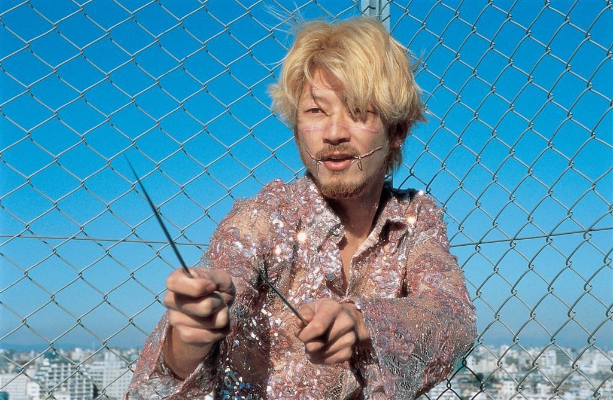
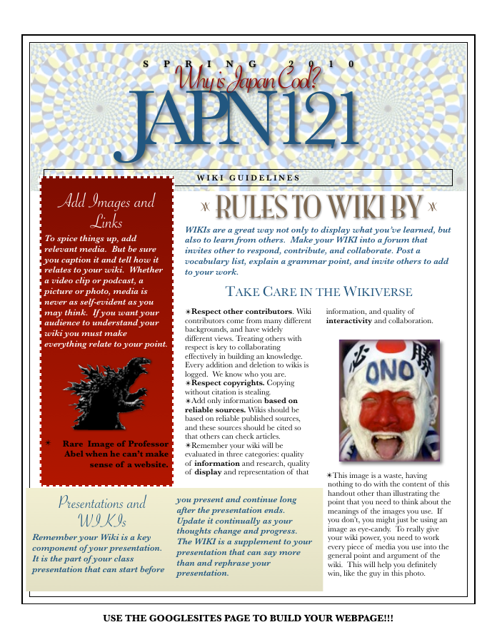
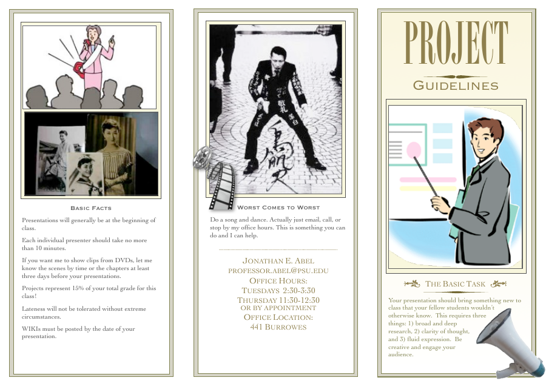
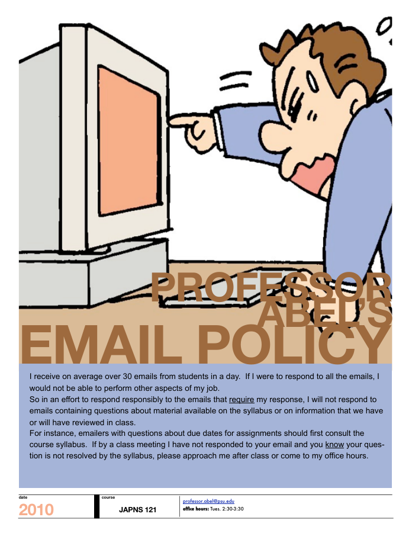

Documents

Check here for course documents
Download the syllabus here.
Download the poster here.


Project Guidelines
Wiki Guidelines


Email Policy
Take Home MidTerm 2


Download the syllabus here.
Download the poster here.
Project Guidelines
Wiki Guidelines


Email Policy
Take Home MidTerm 2
